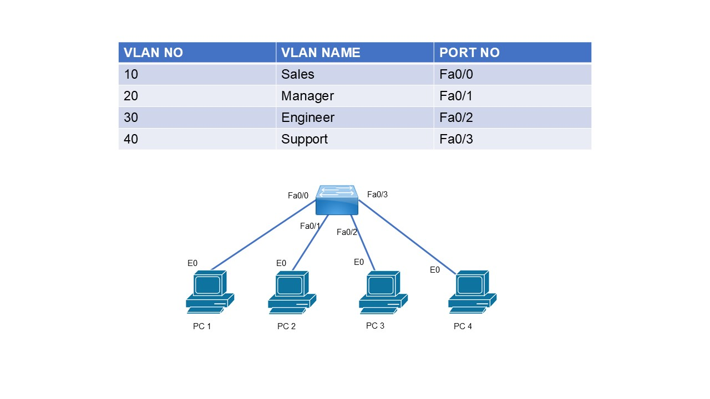

Objective
The objective of this lab is to learn and understand how to create VLANs on Cisco switches.
Explanation
- VLANs allow you to segment your network into multiple, smaller broadcast domains.
VLAN Ranges
- Normal Range VLANs (2–1001): Common VLANs used for general segmentation. Can be created, edited, and deleted.
- VLANs 1002–1005: Reserved for legacy protocols like FDDI and Token Ring.
- Valid VLAN ID Range: 1–4094
Lab Topology
Use the provided network topology diagram for this lab exercise.

Task 1 – Hostname & VLAN Creation
Configure the hostname of the switch as SW1 and create the VLANs shown in the topology.
Switch# config t Switch(config)# hostname SW1 SW1(config)# vlan 10 SW1(config-vlan)# name Sales SW1(config)# vlan 20 SW1(config-vlan)# name Manager SW1(config)# vlan 30 SW1(config-vlan)# name Engineer SW1(config)# vlan 40 SW1(config-vlan)# name Support
Task 2 – Interface Configuration
SW1(config)# interface fa0/0 SW1(config-if)# switchport mode access SW1(config-if)# switchport access vlan 10 SW1(config)# interface fa0/1 SW1(config-if)# switchport mode access SW1(config-if)# switchport access vlan 20 SW1(config)# interface fa0/2 SW1(config-if)# switchport mode access SW1(config-if)# switchport access vlan 30 SW1(config)# interface fa0/3 SW1(config-if)# switchport mode access SW1(config-if)# switchport access vlan 40
Task 3 – Verification
SW1# show vlan brief VLAN Name Status Ports ---- -------------------------------- --------- ------------------------------- 1 default active Fa0/4, Fa0/5, Fa0/6 10 SALES active Fa0/0 20 MANAGERS active Fa0/1 30 ENGINEERS active Fa0/2 40 SUPPORT active Fa0/3